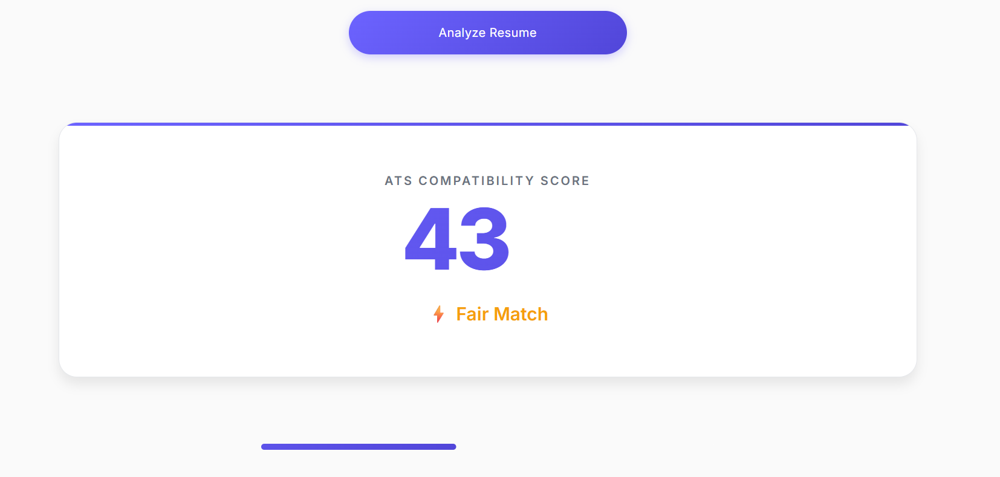
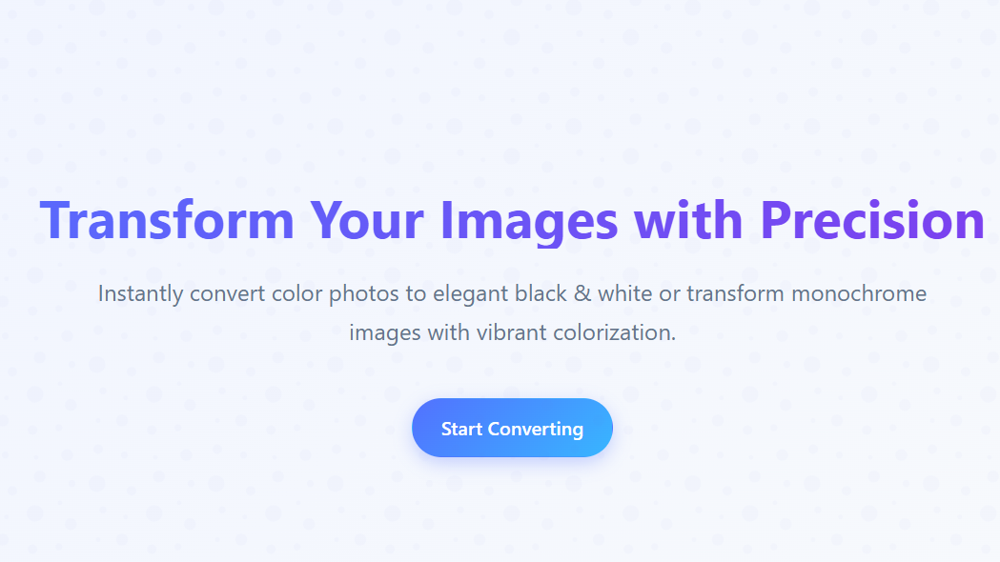

Current · Jun 2026 – Present
SAFI Institute of Advanced Study (Autonomous)
BSc Computer Science and BSc AI, Department of CS & AI
- Undergraduate courses in Computer Science and AI
Department of CS & AI · SAFI Institute of Advanced Study (Autonomous)
Assistant Professor & Placement Coordinator
I teach computer science and AI to undergraduates in Malappuram, Kerala, with a background in data science, machine learning and software development.

I am an Assistant Professor in the Department of Computer Science & Artificial Intelligence at SAFI Institute of Advanced Study (Autonomous), Malappuram, where I also serve as the department's Placement Coordinator. Before joining SAFI, I taught in the MCA department at KMCT College of Engineering.
My path into teaching runs through mathematics and applied data science: a BSc in Mathematics from the University of Calicut, an MCA from KTU, and a data science internship at Sabudh Foundation, where I worked on an AI-driven resume and job description analysis platform. I qualified UGC NET in Computer Science in December 2024.
I work mainly in Python, with Flask, MySQL and the standard data science stack (Pandas, NumPy, Scikit-learn, TensorFlow), and I am a Kaggle Expert in Notebooks.
Jun 2026 – Present
SAFI Institute of Advanced Study (Autonomous), Malappuram
Department of CS & AI. Undergraduate teaching; Placement Coordinator.
Jan 2026 – May 2026
KMCT College of Engineering, MCA Department
Postgraduate courses and Java laboratory sessions.
Jul 2025 – Dec 2025
Sabudh Foundation, Punjab (Remote)
Applied ML and NLP with Python and SQL on the AI for Education project; Team Representative.
2023 – 2025
KTU University
2020 – 2023
University of Calicut
2018 – 2020
Kerala State Board · 88%
2017 – 2018
Kerala State Board · A+ (100%)
I teach with students' starting point in mind: foundations first, worked examples, and plenty of hands-on lab time.
Current · Jun 2026 – Present
BSc Computer Science and BSc AI, Department of CS & AI
Previous · Jan 2026 – May 2026
MCA Department (postgraduate)
Ran Java lab sessions focused on object-oriented design, implementation and problem-solving, aligned with curriculum objectives and assessment requirements.

AI-powered career assistant using LangChain, Groq and Gradio to extract job requirements, parse resumes, match skills and generate tailored interview questions.

Colourisation system using Generative Adversarial Networks with PyTorch and Flask that converts grayscale images into realistic colour images.

Web application to track and manage personal finances, with a Python Flask backend, HTML/CSS frontend and MySQL database.
Department of CS & AI, SAFI Institute of Advanced Study (Autonomous)
Recruiters and companies interested in hiring from the department are welcome to get in touch.
Email about recruitmentPlacement outcomes and student achievements will be listed here.
Students, colleagues and recruiters: email is the quickest way to reach me.
Phone
+91 80780 96803Location
Kerala, India